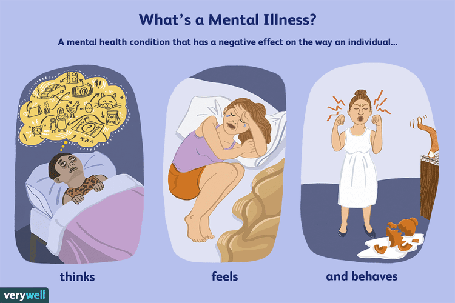

Mental Health Disorder
Introduction

Mental illness is a general term for a group of illnesses that may include symptoms that can affect a person’s thinking, perceptions, mood or behaviour. Mental illness can make it difficult for someone to cope with work, relationships and other demands.There are 5 types of mental health issues will be discussed in this project
Depression
Depression is a mood disorder characterised by lowering of mood, loss of interest and enjoyment, and reduced energy. It is not just feeling sad.Depression affects how people think, feel and act. Depression makes it more difficult to manage from day to day and interferes with study, work and relationships.
Anxiety Disorder
Anxiety disorders are a group of mental health problems. They include generalised anxiety disorders, social phobias, specific phobias (for example, agoraphobia and claustrophobia), and panic disorders. Depression is often related to anxiety disorders.
Anxiety disorders are common mental health problems that affect many people. Approximately 25% of the population have an anxiety disorder that warrants treatment at some time in their life and up to another 25% have less severe anxieties such as fears of spider and snakes.
Eating disorders
Eating disorders include anorexia, bulimia nervosa and other binge eating disorders. Eating disorders can affect people of all ages and genders, and can have serious psychological and physical consequences.
Bipolar
Bipolar affective disorder is a type of mood disorder, previously referred to as ‘manic depression’. A person with bipolar disorder experiences episodes of mania (elation) and depression. The person may or may not experience psychotic symptoms.
Schizophrenia
Schizophrenia is a complex psychotic disorder characterised by disruptions to thinking and emotions, and a distorted perception of reality. Symptoms of schizophrenia vary widely but may include hallucinations, delusions, thought disorder, social withdrawal, lack of motivation and impaired thinking and memory.
Significance
Mental health disorders have a profound impact on individuals, families, communities, and societies. Addressing these disorders is not only a matter of public health but also a moral and ethical imperative to reduce suffering and improve the overall well-being of populations.
Human Suffering: Mental health disorders can cause immense suffering for individuals and their families. They can lead to reduced quality of life, disability, and, in some cases, loss of life through suicide.
Improved Health Outcomes: Effective population health management can lead to improved health outcomes for individuals and communities. It can help reduce mortality rates, lower the incidence of chronic diseases, and enhance overall quality of life.
Economic Impact: These disorders also have a significant economic impact due to medical costs, lost productivity, and reduced quality of life. They can lead to increased healthcare spending and lower workplace productivity.
Stigma and Discrimination:Mental health disorders are often associated with stigma and discrimination. This can prevent people from seeking help and contribute to their suffering in silence.
Comorbidityt: Mental health disorders often co-occur with other health conditions. For example, people with depression may also have chronic physical conditions, making their overall health worse.
Lifestyle Factors:Mental health disorders can contribute to unhealthy lifestyle choices, such as poor diet, lack of physical activity, and substance abuse, which can increase the risk of other health issues.
Impact on Families: Mental health disorders don’t just affect the individual but also their families and caregivers. This can lead to strain on relationships and increased caregiving responsibilities.
Preventable and Treatable: Many mental health disorders are preventable and treatable. Early intervention and effective treatments, including therapy and medication, can improve symptoms and help people lead fulfilling lives.
Research and Innovation:The study of mental health has led to advancements in neuroscience, psychology, and psychiatry. Research in this field not only benefits those with mental health disorders but also contributes to our understanding of the human brain and behavior.
Legislation and Advocacy: The significance of mental health has led to legislative changes and advocacy efforts. Laws and policies are evolving to provide better support and resources for individuals with mental health issues.
Questions to address:
What are the range of mental health disorder types, and how prevalent are they in the population?
How has this prevalence changed over time in the population?
What is the relationship between socialeconimic factors(income(high-income, lower-middle-income, upper-middle-income), GDP, GDP_per_capita, and average outcomes) correlate with mental health outcomes (depression,anxiety,eating disorders, bipolar disorder)?
- How does the prevalence of mental disorders vary by income group?
- How does mental health vary by education level(average_adjusted_years_of_school)
- How does mental health vary by GDP and GDP_per_capita?
How does eating order prevalence changed over time in the male and female?
what is eating disorder prevalence In us increases? Or decrease?
In what age when people first have depression or anxiety in the world?
Do age when people first have depression or anxiety in the world vary by continents and income level?
Which set of factors “better” explains mental health outcomes: socioeconomic or geographic or educational factors?
Do the mental health indicators and educational outcomes necessarily align neatly with economic categories such as income levels?
Can we use educational, economic, and geological factors to predict if a economy have a low or high eating disorders rate?